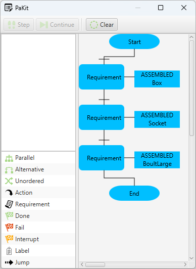

Introduction
Requirements can serve as criteria representing necessary conditions that must be met prior to the execution of a skill or a goal. For instance, if a robot possesses the skill "MoveRobot," an ATTACHED requirement can specify that a part must be affixed to the robot before it can start to move. CMAS has a built in AI planner that can autonomously generate plans outlining how to fulfil requirements and then execute them.
Example requirement on a skill
In the following example, a part is placed in a buffer. The part has only one goal to run a process. The process is located on a machine that requires the part to be there. In between the buffer and the machine, there's a robot that can do transportation. By modelling the system with a requirement and specialised interfaces CMAS can find a path for the part to reach the process without explicitly setting it as goals.
Model
The object illustration below demonstrates how the example can be modelled. The crucial elements in the model are the specialised interfaces paired with relevant skills and their associated PostActions, the AI planner will utilise these to find solutions.
In this example we will use two templates for interface specialisation:
- InterfaceTransport - An interface that can do transportation
- InterfaceLocation - An interface that can be a destination or a start position
Step-by-step instructions:
1. Buffer
- 1.1 Create a resource and name it Buffer. The buffer will serve as a source for our parts later on.
1.1. On Buffer create a new InterfaceLocation and name it BufferInterface. An InterfaceLocation is a specialized interface that can serve as a location, e.g. for pick or place.
1.2. On BufferInterface there is a folder called Specialisation that has one item called Location. Location is a variable object. Open the location folder and add an VariableInteger to items. Name the new integer Position, and set the value to 1 and mark ReadOnly. This variable is now our location it is possible to add more variables as x, y and z to represent more complex locations if required.
1.3. Now create a new Skill as Structured Text and name it pickBuffer.
1.4. Select the new skill and change PostAction to DETACHED. This indicates that if you run this skill you will be detached.
1.5. Create another Structured Text skill and name it placeBuffer.
1.6. Select the new skill and change PostAction to ATTACHED.
2. Machine
- 2.1 Create a resource and name it Machine.
2.2. On Machine create a new InterfaceLocation and name it ProcessInterface.
2.3 In the same way as for BufferInterface add a Position variable and set the value to 2 and read only.
2.4 Create a Structure Text skill, name it placeProcess and set PostAction to ATTACHED.
2.5 Create a Structure Text skill and name it runProcess.
2.6 Open the folder for runProcess and add a new Requirement. Name it MustBeAttached.
2.7 Select MustBeAttached and change WorkFlowType to ATTACHED. This requirement will indicate that a Part that wants to run the skill must be attached to the interface first.
2.8 Open Actions for placeProcess skill and add the following line to onRun() function: writeln('Running the process');
3. Robot
- 3.1 Create a resource and name it Robot.
3.2 Create a new InterfaceTransport and name it GripperInterface. This will serve as a interface that can do transportations.
3.3 Open the Specialisation folder.
3.4 On FromLocation add a new IntegerVariable named Position. Do not make it read-only.
3.5 On ToLocation add a new IntegerVariable named Position. Do not make it read-only.
3.6 Double-click on the existing skill Transport to edit.
3.7 In side the onRun() function add if interface.specialisation.step = 1 then
writeln('Robot transport from ',
remoteinterface.Specialisation.FromLocation.Position,
' to ',
remoteinterface.Specialisation.ToLocation.Position,
' Step ', remoteinterface.Specialisation.Step);
4. ProductA
- 4.1 Add a new Part
4.2 Double-click on the new part.
4.3 Right click in the top left window and select Add new goal.
4.4 Double-click on the new goal.
4.5 Set interface name to ProcessInterface.
4.6 Set process plan name for the goal to runProcess.
4.7 Close the goal.
4.8 Drag the goal and drop it on Start.
4.9 Close the editor.
4.10 Add a new interface and name it BuffertInterface. This ensures that the part can be placed in a buffer.
4.11 Add one more interface and name it GripperInterface. This ensures that the part can be placed in a gripper.
4.12 Select the part and click on Actions.
4.13 Inside the empty editor write the following program (this program will put the part inside a buffer when deployed): program Part;
abstract aBuffer : interface;
procedure onDeploy();
begin
aBuffer.placeBuffer();
end.
Run
- Press Run to start the system (if auto deploy is not on deploy everything).
You should see the following output: Robot transport from 1 to 2 Step 1
Running the process
Example requirements in a process plan
In this example we will look at requirements in process plans for Parts.

A process plan for a part with only requirements.
Assembly
Similar to how we specified ATTACHED as a requirement in the previous example, we can also specify ASSEMBLY as a requirement. While ASSEMBLY is closely related to ATTACHED, there is a key difference: when an agent, typically a material agent, is assembled with another agent, the assembled agent is marked as finished and can no longer be used. The modelling pattern involves representing the main structure as a Part agent and all subassemblies as Material agents. This allows the planner to generate solutions for how to assemble materials and attach parts.
The material to be assembled must have a specialized interface InterfaceAssembly. Similarly, the main structure must have a specialized interface InterfaceLocation, that is compatible with the assembly interface, to tell where to assembly the material.
InterfaceSpecialisation
An InterfaceSpecialisation resembles a regular Interface but includes an additional relation called Specialisation, which can incorporate variables. It also have a property called SpecialisationName that indicates the purpose of the interface. Unlike the standard interface relation Variables, the Specialisation relation is disregarded during the negotiation process and in determining the compatibility of two interfaces. The specialisation variables are utilised by the internal AI planner to gather information for plans or can be used in applications to introduce variables that don't interfere with the negotiation process.
InterfaceLocation
InterfaceLocation is a template for creating InterfaceSpecialisation for locations. It automatically creates a InterfaceSpecialisation with a VariableObject named Location and SpecialisationName set to Location. It also assigns SpecialisationName to a read only value "Location".
InterfaceTransport
InterfaceTransport is a template for creating an InterfaceSpecialisation tailored for transport. It automatically generates an InterfaceSpecialisation that includes two VariableObjects named FromLocation and ToLocation. Additionally, it creates a Skill named Transport with the PostAction configured as TRANSFERED and assigns SpecialisationName to a read only value "Transport".
InterfaceAssembly
InterfaceAsembly is a template for creating an Interface that can be used for assembly. It automatically creates a InterfaceSpecialisation with the SpecialisationName set to Assembly.
- Note
- It is possible to manually create a specialisation interface by setting the correct values and adding the VariableObjects manually on an InterfaceSpecialisation.